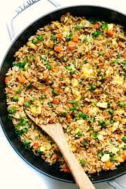

Fried Rice

Description
A quick fried rice recipe like you get at your favorite Chinese restaurant. Leftover rice, plus a couple of eggs, baby carrots, peas, and soy sauce is all you need. Garnish with sliced green onions, if desired.
Making fried rice is a breeze with the recipe you'll find below. The process is simple — preheat your pan before swirling in oil and aromatics, then add uncooked proteins if applicable. Add in rice and vegetables, vigorously tossing ingredients for that toasty, golden-brown color that signals big flavor.
Ingredients
- two thirds cup chopped baby carrots
- half cup frozen green peas
- 2 tablespoons vegetable oil
- 1 clove garlic, minced, or to taste (Optional)
- 2 large eggs
- 3 cups leftover cooked white rice
- 1 tablespoon soy sauce, or more to taste
- 2 teaspoons sesame oil, or to taste
Steps
- Assemble Ingredients.
- Place carrots in a small saucepan and cover with water. Bring to a low boil and cook for 3 to 5 minutes. Stir in peas, then immediately drain in a colander.
- Heat a wok over high heat. Pour in vegetable oil, then stir in carrots, peas, and garlic; cook for about 30 seconds. Add eggs; stir quickly to scramble eggs with vegetables.
- Stir in cooked rice. Add soy sauce and toss rice to coat. Drizzle with sesame oil and toss again.
- Serve hot and enjoy!